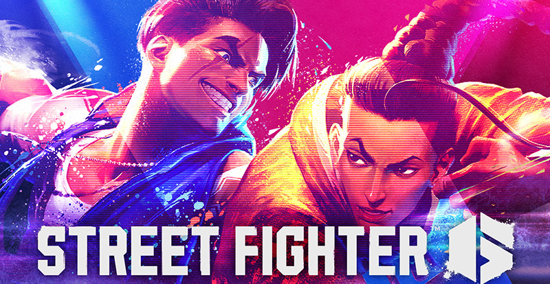

Overwatch 2 Revela su nuevo tanque Ramattra y se confirma la fecha de su segunda temporada
Tal como estaba programado, Blizzard reveló al nuevo tanque de Overwatch 2 durante la Gran Final de la Overwatch League. Se trata de un nuevo tanque llamado Ramattra, un héroe relacionado con Zenyatta que tiene una historia de origen brutal. Que podemos ver en su corto animado donde nos cuentan su historia y propósito, te dejaré el video más abajo por si quieres verlo. También gracias a unas entrevistas pudimos saber que Ramattra contará con dos modos como lo hace bastión y estos dos modos son el "Monje" y "Nemesis". También confirmaron que la segunda temporada de Ow2 comenzará el 6 de diciembre.
God of War: Ragnarök ya es el segundo mejor juego de 2022 en Metacritic
Ya con 122 valoraciones, la nueva aventura de Kratos y su hijo Atreus en su versión para PlayStation 5 ostenta una impresionante calificación promedio de 94 en el portal Metacritic. Su puntaje más bajo es de 80, mientras que el más alto es de 100. Sin contar los relanzamientos y ports, God of War: Ragnarök ya es el juego de 2022 con la segunda mejor calificación en la plataforma. Ahora bien, ¿qué título tiene el honor de estar en el primer lugar? Para sorpresa de nadie, el proyecto de este año con la mejor calificación hasta el momento es ELDEN RING, la obra maestra de Hidetaka Miyazaki y FromSoftware que debutó a finales de febrero.
Messi, Neymar y Pogba preparan colaboración con Call of Duty
Call of Duty continúa con sus colaboraciones con diversas franquicias y personalidades de la cultura popular. al parecer el título FPS celebrará la Copa Mundial de Fútbol 2022 con una colaboración que acaba de confirmar y que involucra a 3 de los futbolistas más grandes de todos los tiempos.Semanas atrás salió a la luz una lista que delataba que los astros del balompié Lionel Messi, Neymar Júnior, Paul Pogba y más estaban en camino a Call of Duty. Pues bien, acaba de confirmarse que la colaboración es real y que los 3 aparecerán en el juego. Activision hizo el anuncio al compartir una imagen que deja ver casilleros en los que los futbolistas en vez de tener su uniforme deportivo aparecen atuendos tácticos para un enfrentamiento bélico, aunque en los 3 espacios hay lugar para un balón.
Bayonetta 3: Siguen los escándalos y mentiras
Hellena Taylor, actriz de doblaje que ha dado voz a Bayonetta, llamó a los jugadores a hacer un boicot a Bayonetta 3. ¿La razón? Piensa que Platinum Games le ofreció una cifra insultante por su trabajo como actriz de voz. La publicación con 9 millones de reproducciones hasta ahora ha tomado a la industria por sorpresa y el problema se hace cada vez más grande. Todo esto ha formado opiniones divididas ¿tu de qué lado estás?.La noche del 15 de octubre, Hellena Taylor publicó una declaración dirigida a los fans de Bayonetta. En el video, la actriz dejó claro que se sintió insultada cuando recibió la propuesta de grabar el juego completo por sólo $4000 dólares. La cantidad dicha le pareció insuficiente para su preparación y experiencia como actriz, así que llamó a los jugadores a no comprar el juego y destinar ese dinero a la caridad.Taylor también menciona que tuvo que hacer una audición que superó sin problemas y en ese momento recibió la propuesta que que para ella fue un insulto. Decidió contactar a Hideki Kamiya, y aunque alabó su talento, al final Platinum Games le contestó con la última oferta que rechazó porque la considera inmoral, tomando en cuenta las ganancias que ha generado Bayonetta. El último tema que toca Hellena, es que Jennifer Hale no tiene el derecho de decir que es la nueva voz de Bayonetta o firmar mercancía inspirada en el personaje. Según la declaración: ella es la única que puede tener el honor al ser la voz original.
Street Fighter 6 ahora si lo hizo genial
Street Fighter 6 es la prueba viviente de que aprender de tus errores puede ayudar a que algo sea mejor. Esta entrega tiene tantas novedades, que nos dejó con el hype a todos los fans. Capcom al fin escuchó nuestras quejas e implementó muchos cambios que te sorprenderán. Después de todo lo que pudimos ver en la Beta cerrada.
Warner Bros planea mejorar el rendimiento de Gotham Knights en consolas
A través de un hilo de Twitter, el estudio desarrollador habló de los inconvenientes que merman al título de mundo abierto y detalló los planes a corto plazo para mejorar la situación. En primer lugar, confirmó que un nuevo parche que corrige bugs y otras cuestiones en la versión para PC ya está disponible para su descarga. Enseguida, adelantó que una actualización llegará a las consolas a finales de esta semana y prometió que pronto revelará su contenido.Por otra parte, Warner Bros. Games Montréal reconoció los problemas de rendimiento y estabilidad que aquejan a las versiones de PlayStation 5 y Xbox Series X|S. Explica que los desarrolladores trabajan de manera ardua para mejorar la tasa de cuadros del videojuego.Somos conscientes de que los jugadores, tanto en PC como en consolas, experimentan problemas de rendimiento. El equipo trabaja duro en un parche más grande para mejorar el rendimiento general y brindar una mejor experiencia. Para los usuarios de consolas, nuestro objetivo específico es abordar los desafíos con la estabilidad de la tasa de frames”, reza la publicación.Por último, la compañía invitó a los jugadores a reportar los errores y problemas que experimentan mientras juegan Gotham Knights.Pero cuéntanos, ¿crees que el rendimiento del juego quedó a deber? Déjanos leerte en los comentarios.
Revivirán Paragon, el MOBA de Epic que cerró por el popular Fortnite
Paragon, el MOBA de Epic Games, se mantuvo activo sólo por un par de años, pues cerró sus puertas de forma definitiva en 2018 tras su debut en 2016. El juego para PlayStation 4 y PC cerró sus servidores por una razón: el enorme éxito de Fortnite.Epic confirmó que la popularidad del Battle Royale había comprometido el futuro de Paragon, así que era cuestión de tiempo para que el MOBA muriera. Tras el cierre del título, el estudio liberó los activos del juego de forma gratuita y, en octubre, le concedió a Netmarble el derecho de uso de todo el material.El estudio de Corea del Sur decidió aprovechar esto para darle otra oportunidad a Paragon, pues lo revivirá con un nuevo proyecto llamado Paragon: The Overprime
Overwatch 2 presenta su evento de Halloween; así podrás conseguir gratis un skin temático
A través de un comunicado en su blog oficial, Blizzard Entertainment confirmó que el evento de Halloween 2022 para Overwatch 2 estará disponible del 25 de octubre al 8 de noviembre. Durante ese periodo, los jugadores podrán participar en Junkensteins Revenge: Wrath of the Bride, una nueva versión del modo temático PvE de años anteriores.A juzgar por el avance de revelación, esta nueva experiencia PvE para hasta 4 participantes girará en torno a Junker Queen, Kiriko, Sojourn y Ashe, quienes se enfrentarán a la versión malvada de Sombra. Asimismo, parece que los jugadores tendrán que hacer más que simplemente sobrevivir a oleadas de enemigos.